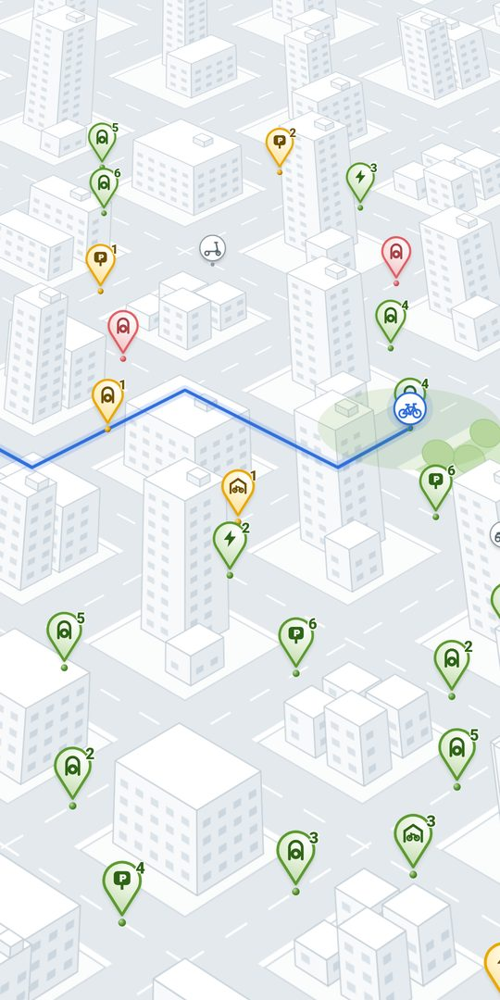

Start and sign in
- Tap Get started, then sign in with Google or with a link sent to your e-mail.
- Or tap Guest to look around first. Signing in keeps your places and routes.
MOBIlity is the map of bike places: racks, repair stations, shops, rentals and shared bikes and scooters. See which ones are free right now, get a route that fits how you ride, and call for help if you need it.

What it does
Every rack and station shows green, yellow or red, and how many minutes ago a rider confirmed it.
Pick Fast, Balanced or Quiet. Tell it if you ride an e-bike, carry cargo or have a passenger.
Hold the SOS button for a few seconds and riders within 2–3 miles see that you need help.
One rider hosts and shows a QR code. Everyone who scans it sees the group on the map.
Opening hours, phone and a Navigate button for bike, scooter and moped places across the US.
The Health tab adds up your rides by day, week and month.
Download
Scan with the phone camera
On the phone, scan the code or open terminatoru86.github.io/mobility-app, then tap Download.
This is a test build. To install a newer one, remove the old app first. Android only for now; the iPhone version comes later.
User guide
The five buttons at the bottom are always there: Map, Routes, Health, Community and Profile.